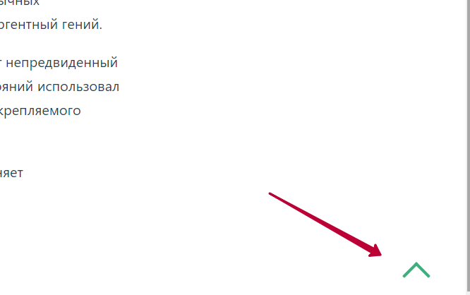
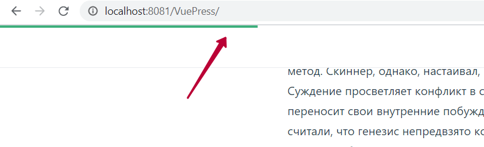

Плагины VuePress back-to-top и reading-progress
Рассмотрим установку и работу плагинов plugin-back-to-topopen in new window и plugin-reading-progressopen in new window.
За основу возьмем HelloWorld проектopen in new window. Полная версия примера размещена в этом репозиторииopen in new window.
back-to-top
Плагин добавляет кнопку которая скролит страницу наверх. Кнопка появляется только если страницы прокручена по вертикали.
Для установки добавляем команду в скрипт создания проекта 01_CreateProject.bat:
call yarn init
call yarn add -D vuepress
call yarn add -D @vuepress/plugin-back-to-top
2
3
И активируем плагин в config.js:
module.exports = {
base: "/VuePress/",
plugins: [
'@vuepress/back-to-top'
]
}
2
3
4
5
6
Запускаем сайт, скролим вниз и видим появившуюся кнопку:

reading-progress
Плагин добавляет индикатор показывающий насколько страница прокручена вниз. Это удобно при чтении с телефона, где скроллбар отображается только в процессе прокрутки.
Для установки добавляем команду в скрипт создания проекта 01_CreateProject.bat:
call yarn init
call yarn add -D vuepress
call yarn add -D @vuepress/plugin-back-to-top
call yarn add -D vuepress-plugin-reading-progress
2
3
4
И активируем плагин в config.js:
module.exports = {
base: "/VuePress/",
plugins: [
'@vuepress/back-to-top',
'reading-progress'
]
}
2
3
4
5
6
7
При прокрутке отображается прогресс чтения:

Плагин позволяет настроить отображения индикатора только на некоторых страницах: как глобально в настройках, так и для каждой странице отдельно. Пример глабальной настройки включающей индикатор везде кроме главной страницы:
['reading-progress', {readingDir: /[^/]+$/}]